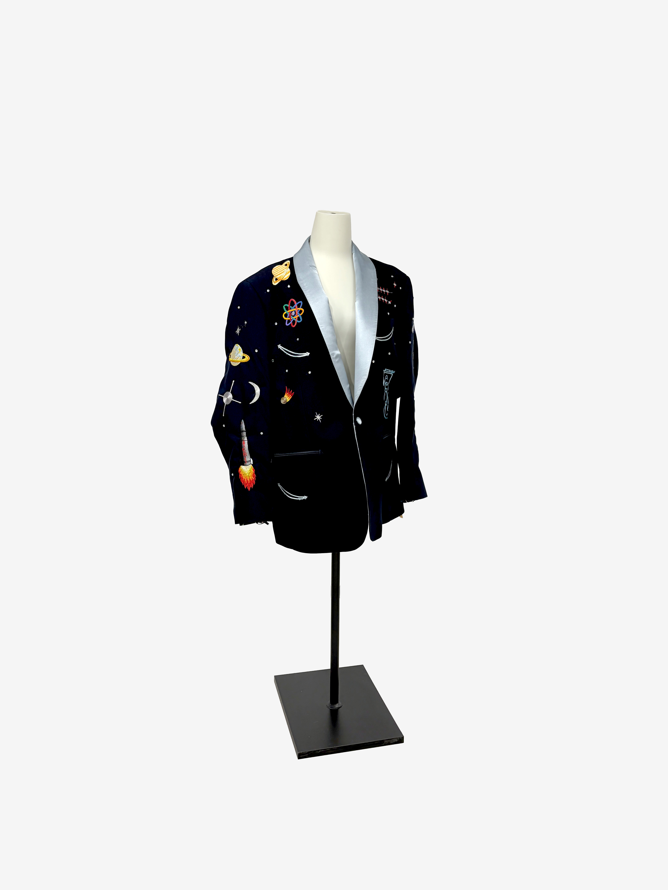

Welcome to my website
I am currently a PhD candidate in Computational Media and Arts at The Hong Kong University of Science and Technology (Guangzhou).
I will be defending my thesis in Summer 2026.
My interests are in contemporary art, alien intelligences, and artists making their own tools.
Recent work can be found on my
github

Tom Petty's Quantum AI Alignment Jacket, 2025
An embroidered jacket with embedded BLE micro-contollers that I use to steer control
vectors of language models and control audio playback. Based on the suit Tom Petty
wore at Live Aid 1985.
Some recent works are
BackChat and
A Speculativ AI Reenactment of the Figurists' Encounters with the I Ching
Previously I was involved in :
The Institute of Jamais Vu, London |
Serf, Leeds |
NL'CAO, New Mexico |
Black Shuck co-operative
If you'd like to contact me, please use my email
isaac@isaacclarke.com, or open an issue on one of my repos.